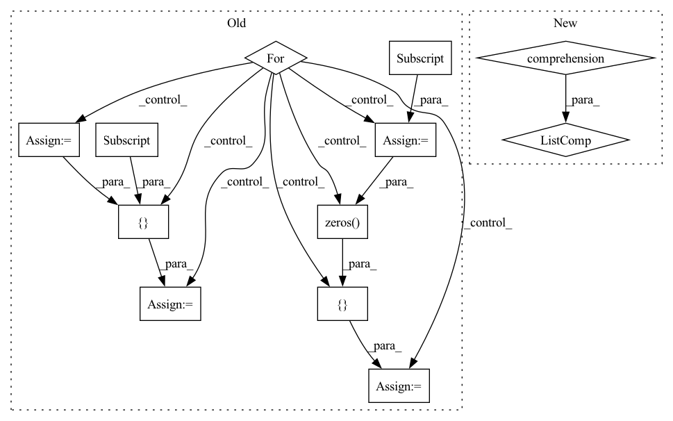

Pattern ID :19551
Before Change
features = torch.zeros((len(data), n_mels, max_inp_len))
labels = torch.zeros((len(data), max_label_len))
for i in range(len(data)):
input_length = data[i][0].size(1)
label_length = data[i][3]
features[i] = torch.cat([data[i][0] , torch.zeros((n_mels, max_inp_len - input_length)) = torch.cat([ data[i][1], torch.zeros( (max_label_len - label_length)) ])
return features, labels, torch.tensor(input_lengths), torch.tensor(label_lengths)
After Change
melspecs, texts, input_lengths, label_lengths = zip(*data)
specs = [torch.transpose(spec, 0, 1) for spec in melspecs]
specs = pad_sequence(specs, batch_first=True)
specs = torch.transpose(specs, 1, 2)
labels = pad_sequence(texts, batch_first=True)In pattern: SUPERPATTERN
Frequency: 3
Non-data size: 12
Instances Fragment ID: 63932326
Project Name: ivankunyankin/quartznet-asr
Commit Name: f5499846f8525773be9824471b65f109603eed5c
Time: 2021-07-03
Author: IKunyankin@gmail.com
File Name: utils.py
M Class Name: AnonimousClass
N Class Name: AnonimousClass
M Method Name: custom_collate(1)
N Method Name: custom_collate(1)
M Parent Class:
N Parent Class:
M File Name: utils.py
N File Name: utils.py
M Start Line: 85
M End Line: 98
N Start Line: 88
N End Line: 94
Before Change
gt_bboxes = []
gt_labels = []
gt_ignore = []
for i in range(len(dataset)):
ann = dataset.get_ann_info(i)
bboxes = ann["bboxes"]
labels = ann["labels"]
if "bboxes_ignore" in ann:
ignore = np.concatenate([
np.zeros( bboxes.shape[0], dtype=np.bool) ,
np.ones(ann["bboxes_ignore"].shape[0], dtype=np.bool) = np.concatenate([ labels, ann["labels_ignore"] ])
gt_bboxes.append(bboxes)
gt_labels.append(labels)
if not gt_ignore:After Change
def voc_eval(result_file, dataset, iou_thr=0.5, nproc=4):
det_results = mmcv.load(result_file)
annotations = [dataset.get_ann_info(i) for i in range(len(dataset))]
if hasattr(dataset, "year") and dataset.year == 2007:
dataset_name = "voc07"
else:
dataset_name = dataset.CLASSES Fragment ID: 63932324
Project Name: wxinlong/solo
Commit Name: 47bab544eca31aaca7e99a402568b8c29292f74b
Time: 2019-12-31
Author: chenkaidev@gmail.com
File Name: tools/voc_eval.py
M Class Name: AnonimousClass
N Class Name: AnonimousClass
M Method Name: voc_eval(4)
N Method Name: voc_eval(3)
M Parent Class:
N Parent Class:
M File Name: tools/voc_eval.py
N File Name: tools/voc_eval.py
M Start Line: 12
M End Line: 38
N Start Line: 9
N End Line: 11
Before Change
gt_bboxes = []
gt_labels = []
gt_ignore = []
for i in range(len(self.dataset)):
ann = self.dataset.get_ann_info(i)
bboxes = ann["bboxes"]
labels = ann["labels"]
if "bboxes_ignore" in ann:
ignore = np.concatenate([
np.zeros( bboxes.shape[0], dtype=np.bool) ,
np.ones(ann["bboxes_ignore"].shape[0], dtype=np.bool) = np.concatenate([ labels, ann["labels_ignore"] ])
gt_bboxes.append(bboxes)
gt_labels.append(labels)
if not gt_ignore:After Change
class DistEvalmAPHook(DistEvalHook):
def evaluate(self, runner, results):
annotations = [
self.dataset.get_ann_info(i) for i in range(len(self.dataset))
]
// If the dataset is VOC2007, then use 11 points mAP evaluation.
if hasattr(self.dataset, "year") and self.dataset.year == 2007:
ds_name = "voc07"
else: Fragment ID: 63932322
Project Name: wxinlong/solo
Commit Name: 47bab544eca31aaca7e99a402568b8c29292f74b
Time: 2019-12-31
Author: chenkaidev@gmail.com
File Name: mmdet/core/evaluation/eval_hooks.py
M Class Name: DistEvalmAPHook
N Class Name: DistEvalmAPHook
M Method Name: evaluate(3)
N Method Name: evaluate(3)
M Parent Class: DistEvalHook
N Parent Class: DistEvalHook
M File Name: mmdet/core/evaluation/eval_hooks.py
N File Name: mmdet/core/evaluation/eval_hooks.py
M Start Line: 79
M End Line: 106
N Start Line: 79
N End Line: 81